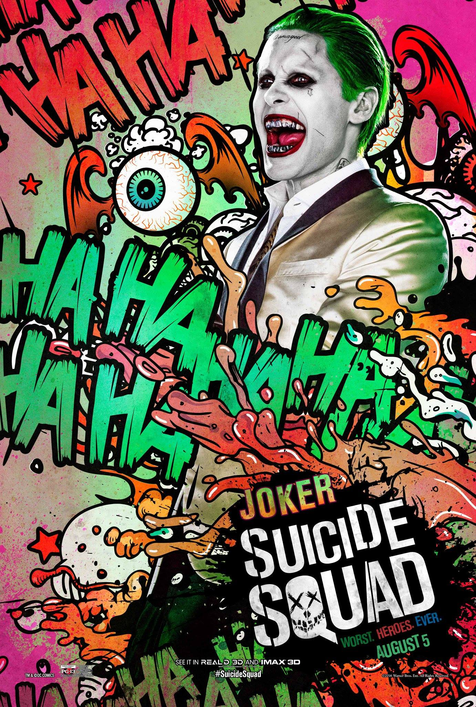

The Joker is a fictional supervillain created by Bill Finger, Bob Kane, and Jerry Robinson who first appeared in the debut issue of the comic book Batman (April 25, 1940) published by DC Comics. Credit for the Joker's creation is disputed; Kane and Robinson claimed responsibility for the Joker's design, while acknowledging Finger's writing contribution. Although the Joker was planned to be killed off during his initial appearance, he was spared by editorial intervention, allowing the character to endure as the archenemy of the superhero Batman.
READ MORE
Joker In Movies
The Joker has been portrayed by Cesar Romero in the Batman television series, Jack Nicholson in Tim Burton's Batman, Heath Ledger in Christopher Nolan's The Dark Knight, and Jared Leto in David Ayer's DC Extended Universe film Suicide Squad. Throughout the years, Larry Storch, Lennie Weinrib, Frank Welker, Mark Hamill, Michael McKean, Allen Enlow, Kevin Michael Richardson, Jeff Bennett, Steve Blum, Michael Dobson, John Kassir, Richard Epcar, John DiMaggio, Corey Burton, Brent Spiner, Christopher Corey Smith, Michael Emerson, Troy Baker and Dee Bradley Baker have all provided voice work for the character in animated, motion comic, and video game form.


Joker In Comics
In his comic book appearances, the Joker is portrayed as a criminal mastermind. Introduced as a psychopath with a warped, sadistic sense of humor, the character became a goofy prankster in the late 1950s in response to regulation by the Comics Code Authority, before returning to his darker roots during the early 1970s. As Batman's nemesis, the Joker has been part of the superhero's defining stories, including the murder of Jason Todd—the second Robin and Batman's ward—and the paralysis of one of Batman's allies, Barbara Gordon. The Joker has had various possible origin stories during his decades of appearances. The most common story involves him falling into a tank of chemical waste which bleaches his skin white, turns his hair green, and his lips bright red; the resulting disfigurement drives him insane. The antithesis of Batman in personality and appearance, the Joker is considered by critics to be his perfect adversary.